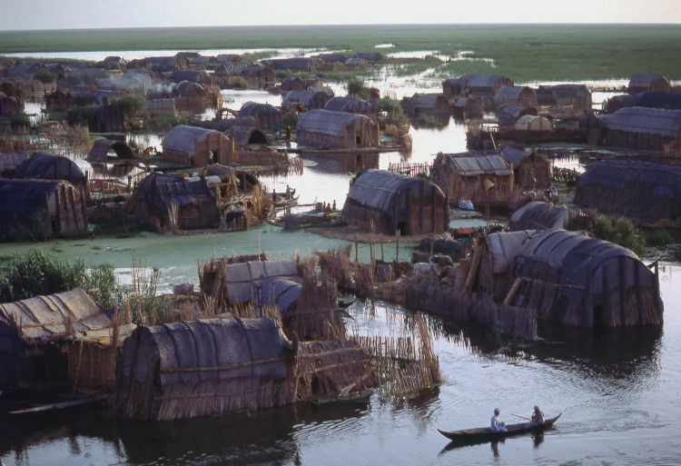
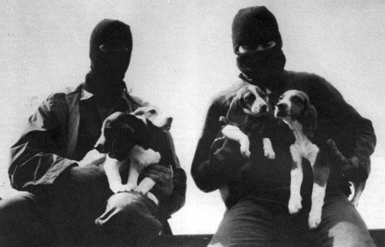
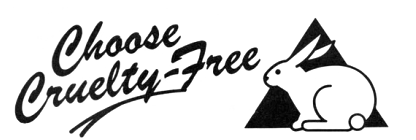
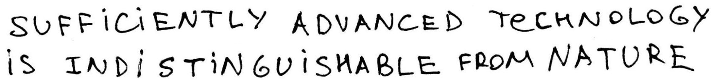
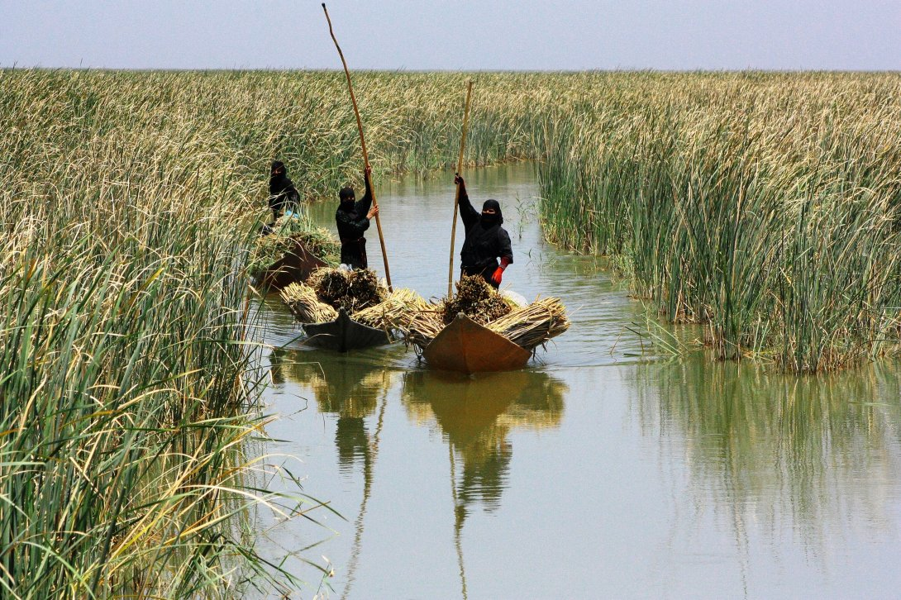
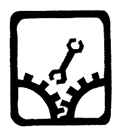
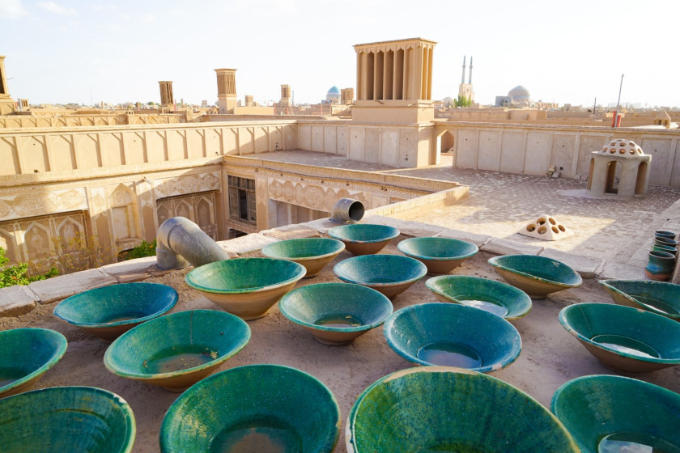

The Three Arrows used by anti-fascist anarchists originated from the Social Democratic Party of Germany to mean "neither Stalin's slaves nor Hitler's henchmen" and was designed to be stenciled over swastikas. It represents the different types of authoritarianism that should be opposed: Reactionaries, Fascists & Authoritarian Socialists.
Capitalism Fascism Reactionism Fuck Off!
Because of the decentralized nature of some of my work, this has to be spelled out quite clearly: Preparing for impending apocalyptic events should mean collective action and structural reform, not individualism and isolation.

I am committed to fighting normative violence, fascism, colonialism, and racial supremacy in all of its forms. To undermine the capitalist structure and its abusive scripts about human worth in relation to work, productivity, and ownership. To subvert oppressive gender norms and put in question the binary. To actively unlearn biased and colonial thinking. ~
I am aggressively opposed to racism, sexism, homophobia, transphobia, nationalism, ethnocentrism, religious fundamentalism, and oppressive and coercive power structures of all kinds.
We will face this reality honestly and learn how to live with it.
We realize that the current and upcoming crises cannot be reduced to a set of problems in need of technological or political solutions. We believe that the roots of the current and upcoming crises lie in the stories we have been telling ourselves.
| Personal Responsibility | Political Action | Systemic Change |
The myth of progress tells us that we are destined for greatness, that we began grunting in the primeval swamps, as a humble part of something called nature, which we have now triumphantly subdued.
It came to be understood among the people of our culture that life in the wild was governed by a single, cruel law known as "kill or be killed." In recent decades, ethologists have discovered that this law is a fiction. In fact, a system of laws, universally observed, preserves the tranquility of the wild, protects species and even individuals, and promotes the well-being of the community as a whole. This system of laws has been called, among other things, the peacekeeping law, the law of limited competition, and animal ethics.

Collapse won't be addressed by buying a Prius, signing a treaty, or turning off the air-conditioning. The biggest problem we face is a philosophical one: understanding that this civilization is already dead. The sooner we confront this problem, and the sooner we realize there's nothing we can do to save ourselves, the sooner we can get down to the hard work of adapting, with mortal humility, to our new reality.
An Adaptationist is someone who understands and respects the science, and recognises, based on history, that humanity has not cooperated on what what needed to be done to address climate change. Adaptationists, in realising this, make active changes in their own lives & within their own local community because that is all they have left.
A way of living which seeks to prevent exploitation of, and cruelty to, other animals for food, clothing or any other purpose.
Specisism is discrimination on the basis of species, oppression and judgment of an animal on the basis of that animal's species or that animal's non-membership in a species. The belief in human superiority over other animals or certain non-human animals' superiority over others.
Animal Rights is the position that non-human animals have rights and inherent value independent of their use.
Animal Rights
- Animal Liberation Front: An international, leaderless resistance that engages in removing animals from laboratories and farms, destroying facilities, arranging safe houses and veterinary care, and operating sanctuaries where the animals subsequently live.
- Animal Advocacy: Promotion of the interests of animals, generally. Includes work for animal rights and animal welfare.
- Commodification: The conversion of a living being, principle, or natural environment into an "object" that is used, exchanged, or consumed for profit or other desired gain.
- Debarking: The surgical removal and manipulation of tissue in a dog's vocal cords to drastically quiet his or her natural bark. Debarking does not address the underlying reasons that a dog may be barking excessively, and the dog will continue to bark, albeit more quietly or silently.
- Draize Test: Eye-irritation test for household products and cosmetics in which drops of a substance are placed in the eyes of rabbits, causing the animals ulcers, blindness, and other injuries before they are ultimately killed.
- Flowerpot Technique: A technique used in sleep deprivation studies designed to allow NREM sleep but prevent REM sleep.
- Forced Molting: The egg-industry practice of artificially inducing hens to molt by depriving them of food for several days to two weeks when their egg production has declined.
- Rape Rack: The industry term referring to the contraptions in which cows and pigs are restrained while they are forcibly inseminated.
- Veal Crate: Small crate in which a calf being raised for veal is confined and tied up. The calf's movement within the crate is intentionally restricted to limit the strengthening of muscle, and an insufficient diet is provided intentionally to keep the cow anemic.

When advocating lifestyles that forlet maximalism, it is important to frame it in a positive way. Settling for simple and coarse things does not need to be a "sacrifice" but something genuinely better than the mainstream alternative.
| Argument Ad Caninum | |
|---|---|
| Humans have canine teeth, so we're supposed to eat meat. | Most herbivores and omnivores have canines. Canines are not a trait exclusive to carnivores. |
| Appeal to nature | |
| Lions eat other animals in nature. It's the food chain. And we're omnivores. | The lion will quickly perish if they do not eat meat. This is simply not the case with Homo sapiens, who are, anatomically speaking, frugivores. |
| Homo Uber Alles | |
| Non-human animals don't deserve the same rights. | Rights are conventions, not natural laws. We don't have to require non-human animals to have rights in order to take into account their suffering. |
| Whataboutism | |
| There are wars going on and people starving in the world. | Wars and starvation are not aided by animal abuse. In fact, as it requires more crops and resources to farm animals, it could be argued that it is more wasteful and more harmful to those starving. |
| Plants have feelings | |
| How can you kill innocent cabbages and still claim that killing animals is wrong? | This objection concerns the sheer quantity of plants needed to produce meat. Producing a single pound of beef, for instance, requires sixteen pounds of grain. If one is legitimately concerned with mitigating the amount of suffering in the world, then there is simply no way to justify eating meat, especially if one believes that plants also suffer. |
| Happy Meat Fallacy | |
| Isn't it preferable for farm animals to live their lives in the bucolic serenity of verdant fields of clover, galloping insouciantly hither and yon, rather than living in the deplorable squalor and filth of factory farms? Isn't that more humane? More compassionate? More responsible? | While some methods of breeding, enslaving, and slaughtering animas are admittedly less cruel than others, they all involve unpardonable acts of violence against an innocent and defenseless animal who had, in most cases, lived only a fraction of her natural life. |
| The personal choice | |
| Eating is an entirely private matter in which no outside authority should have the right to interfere. | In order for a choice to be entirely personal, all those involved with or affected by it must give their consent. The global animal by-product industry is responsible for environmental destruction on an enormous scale affecting everyone, including those of us who don't eat animals. |
| Argument From Antiquity | |
| Our ancestors ate animals. | Non-human animals have a long history of being a part of the human diet, but this fact says nothing at all about the moral or ethical propriety of breeding, enslaving, killing, and eating animals. Humans also have a long history of killing, raping, and butchering one another and until somewhat recently. It mustn't be forgotten that throughout the greater part of modern history, animal by-products constituted only a tiny part of the human diet. |
| A first-world phenomenon | |
| Veganism is a privilege, a first-world phenomenon. | So is higher education and universal health care. The fact that something is a privilege doesn't imply that we shouldn't strive for it. Ask anyone who uses this argument what's actually stopping them from going vegan, and they'll come up with a whole list of first world problems: "I couldn't live without bacon", "I don't have enough time". |
| I don't have time to be vegan | |
| I don't have time to be vegan. | Being vegan is no more time-consuming than being a non-vegan. Indeed, often the foods that take longest to cook are animal products. |
| Not Everyone | |
| Not everyone in the world can go vegan. | But you can. And that's the point. Anyone who's reading this has no excuse not to be vegan. Unless you're either a.) sitting on a sand dune in the middle of the Sahara Desert, or b.) sitting in an igloo somewhere in the North Pole. Palming off one's own complicity in animal agriculture onto those living in barren wastelands shows a complete lack of ability to take responsibility for one's own actions. |
| Veganism is only possible with modern technology | |
| Veganism is only possible with modern technology. | Not only is this argument irrelevant because we are living in the here and now and with modern technology (so the arguer would be morally obliged to be vegan anyway), but it's not even true. |
| Edge Case | |
| Animals grow all year round. Edible crops might not. In some regions, keeping and eating animals is a better use of the land than trying to cultivate it. | Since those living in and near the Arctic Circle are less than 1/100th of a percent of the population, their meat consumption is mostly irrelevant to the larger point about the impact of exploiting animals on a global scale. These are probably good reasons why no one should live in the extreme north anyway—this is simply not a natural habitat for humans, so we aren't justified for trying to exploit it as much as possible for our benefit. |
| A cult | |
| Stop forcing your beliefs on others. | There is not one ideology on this earth more forceful than Carnism. Those who eat meat, cheese, and eggs, who wear leather and wool, force their beliefs on others to such an unimaginable extent that others actually die for their beliefs(by the hundreds of billion each year). |
| Veganism is expensive | |
| Most people can't afford a healthy vegan diet. Telling these people that their way of life is morally inferior because you can afford a healthy diet that avoids making any animals suffer but they don't is moral elitism. | Pound for pound, a plant-based diet is by far the least expensive one on the planet, given that the staple foods of the most poverty-stricken societies worldwide are rice, beans, lentils, potatoes, bread, and so forth. For much of the world, meat and animal products are a luxury item. |
| Argument from Personal Experience | |
| My Grand-Mother Ate 40 Pounds of Bacon Every Day of Her Life And She Lived To Be 120. | Merely because someone has survived to an old age while maintaining unhealthy habits does not testify to the merit of those habits. Considered within those contexts, the evidence very clearly suggests that a whole foods, plant-based diet is quite conducive to optimal human health and that eating animals and the products derived from them is associated with an increased risk of heart disease, cancer, diabetes, obesity, high blood pressure, and many other bodily ailments. |
| Ad Hominem argument | |
| I Once Saw A Vegan Wearing Leather Shoes. | The arguments for veganism stand or fall on their own merits and are neither supported nor undermined by the personal habits or integrity of those who embrace, or purport to embrace, the philosophy. This argument is even more tenuous in light of the fact that many convincing, cruelty-free alternatives to leather now exist and even from a close distance, they are all but indistinguishable from the (so to speak) genuine article. |
| Anthropocentric claim | |
| Non-human animals were put on Earth for the benefit of Homo sapiens. | That human beings have the ability to exploit non-human animals does not in the least imply that the world’s non-human animals exist for the purpose of being exploited. There is nothing in the fossil record or in the modern scientific canon to suggest that either human or non-human animals were placed on this planet by anyone, or anything. |
| Vegetarian Hitler | |
| Hitler was a vegetarian. | The notion that Hitler was a vegetarian was a gross fabrication conceived and promulgated by his minister of propaganda, Joseph Goebbels, who wanted Hitler to be seen as an ascetic, a paragon of self-restraint, a man invulnerable to the myriad temptations of the flesh, who did not drink alcohol, smoke cigarettes, consort with women, or eat meat. By this outward show of asceticism, he could claim that he was dedicated to the service of his people.

|
| Tu Quoque fallacy | |
| Animals, like field mice, get hurt in the process of agriculture and the raising of plants. | It is the intention of most vegans to cause as little harm and as little suffering as possible to all sentient beings, including field mice. That some measure of harm will result from some of our choices is practically unavoidable. What the vegan concern themselves with, however, is minimizing that harm as much as they can by making choices that don't require that animals be enslaved, exploited, and slaughtered. |
| The thought experiment | |
| If you were stranded on a desert island and you had nothing to eat but pigs-in-a-blanket and wild grouse, you would rather starve? | What this argument also fails to acknowledge is the difference between killing as matter of pure necessity and killing as matter of convenience or pleasure, which are by no means morally equivalent. Killing as matter of survival(as only a small handful of subsistence hunters do) is a vastly different thing from killing for the sake of sensory pleasure or out of convenience. Let's say that you, eater of meat, eggs, and dairy, were given a choice between two life-style alternatives. On the one hand, you could get all the nutrients and calories you need from a healthy, cruelty-free, vegan diet consisting of fruits, vegetables, and grains, all of which are readily available at almost any supermarket. On the other hand, you could subsist on a diet that necessitates cruelty, exploitation, and slaughter and which contributes significantly to climate change, deforestation, water scarcity, water pollution, ocean “dead zones”, habitat loss, species extinction, and world hunger. |
| Might is Right | |
| It is a near certainty that at some point in any discussion of the vegan life-style with a meat-eater, the word "Bacon!" will be invoked, as if the momentary sensory experience of eating bacon somehow constitutes a legitimate moral defense of or justification for the torment and slaughter of the pigs from whose bodies bacon is produced. | An important part of being a responsible and well-rounded person is recognizing that just because you enjoy something doesn’t make it right. The assumption that a moment's sensory pleasure on the part of a human being somehow provides legitimate moral grounds for tormenting and slaughtering an innocent and defenseless non-human animal is best challenged by substituting the sense of taste with either the auditory or olfactory sense. The ability to recognize that some (indeed, most) things are more important than sensory pleasure, which is, in any case, always subject to diminishing returns, is indispensable for anyone who aspires to live a life that is not merely hedonistic. |
The layer of chicken bones currently piling up in landfills around the world is, in fact, an ideal marker of the Anthropocene.
Anarchy means not necessarily the absence of order but an absence of rule.
Anarchism is a social movement that seeks liberation from oppressive systems of control including but not limited to the state, capitalism, racism, sexism, ableism, speciesism, and religion.
It is founded on the observation that since only a few are wise enough to rule themselves, even fewer are wise enough to rule others. Anarchists wish to create a society based upon individual freedom and voluntary cooperation.
Anarchists advocate a self-managed, classless, stateless society without borders, bosses, or rulers where everyone takes collective responsibility for the health and prosperity of themselves and the environment.
To be free is to allow each one to live their lives in their own way as long as each allows all to do the same. A just society is one in which liberty for one person is constrained only by the demands created by equal liberty for another.
Harmony in such a society is obtained, not by submission to law, or by obedience to any authority, but by free agreements concluded between the various groups, territorial and professional, freely constituted for the satisfaction of the infinite variety of needs and aspirations of a person.
The individual cannot bargain with the State. The State recognizes no coinage but power: and it issues the coins itself.Ursula K. Le Guin, The Dispossessed
Anarchism directs its forces against the greatest foe of all social equality; namely, the State, organized authority, or statutory law. Just as religion has fettered the human mind, and as property, or the monopoly of things, has subdued and stifled people's needs, so has the State enslaved the spirit, dictating every phase of conduct. It matters not whether it is government by divine right or majority rule. In every instance its aim is the absolute subordination of the individual.

The State is the economic master of its servants who would either remain true to their political faith and lose their economic support, or they would cling to their economic master and be utterly unable to do the slightest good. In all states there is the same principle of justice, which is the interest of the government; and as the government must be supposed to have power, the only reasonable conclusion is, that everywhere there is one principle of justice, which is the interest of the stronger.
- Anarchy: A word that comes from the Greek, and signifying "without government", the state of a people without any constituted authority.
- Health: A state of complete physical, mental and social well-being and not merely the absence of disease or infirmity.
- Ecofeminism: Ecofeminist thinkers draw on the concept of gender to theorize on the relationship between humans and the natural world.
- Dark Greens: The ones who believe that environmental problems are an inherent part of industrialized civilization, and seek radical political change.
- Light Greens: The ones who see protecting the environment first and foremost as a personal responsibility, focusing on environmentalism as a lifestyle choice.
Elections serve to represent us to each other at our worst, distilling the most offensive, cowardly, and servile aspects of the species. Many people who would never personally wrest a mother from her children are capable of endorsing deportation from the privacy of a voting booth, just as most people who eat meat could never work at a slaughterhouse.~
The contention that a standing army and navy is the best security of peace is about as logical as the claim that the most peaceful citizen is he who goes about heavily armed.
- Life Without Law
- Indigenous Anarchist Federation
- Tyranny of structurelessness
- Center for a Stateless Society

Sustainability, longevity, and balance with an emphasis on renewable energy.
Solarpunk is a movement centered on using and being affected by the use of renewable resources with a focus on decentralization, community activism, social justice and civic empowerment. A recognition that economic, social, and ecological injustices are all deeply inter-connected.
Embracing approachable, personal technology and envisioning a world in which the detritus of consumer culture is appropriated and repurposed toward the reconstruction of a devastated ecology.
Permaculture is the science and practice of creating semi-permanent ecosystems of nature. The resilience of any such ecosystem is equal to it's diversity + interconnectedness. Permaculture design is a system of assembling conceptual, material and strategic components in a pattern which functions to benefit life in all its forms. It seeks to provide a sustainable and secure place for living things on this earth.
Punk is a rejection of mainstream, corporate mass culture and its values. It manifests through direct action, such as protest or demonstration disruption, political violence, ecotage, street barricades, squatting, pirate radio, off-grid energy, graffiti, vandalism and public and business property destruction.
 Solarpunk is also a reaction to the cynical and dystopian imaginaries that have come out of the fear of climate change. It is a way of tackling ecoanxieties and an invitation to complement the important work of climate scientists. Just as climate scientists have sought to warn the world about the dangers of climate change, Solarpunks are offering alternative visions to the helplessness often generated by such warnings.
We're destroying the world because we are, in a very literal and deliberate way, at war with it. People need more than to be made to feel stupid and guilty. They need more than a vision of doom. They need a vision of the world and of themselves that inspires them.
Green skills are the abilities needed to develop and support a resource-efficient society, such as permaculture, food production, food preservation, ecological construction, maintenance and renovation.
If we listened to people like you, more or less vagabonds and barefoot tramps, we would not have got beyond the bicycle. That's just it! we would ride bikes in the cities.Bernard Moitessier, The Long Way
- A Critique of Primitivist Anticiv Thought
- Utopia, Not Futurism, Murray Bookchin
A holistic approach to computing and sustainability inspired from permaculture.
Permacomputing encourages the maximization of hardware lifespan, minimization of energy usage and focuses on the use of already available computational resources. It values maintenance and refactoring of systems to keep them efficient, instead of planned obsolescence, permacomputing practices planned longevity. It is about using computation only when it has a strengthening effect on ecosystems.

Designing for Disassembly ensures that all elements of a product can be disassembled for repair and for end of life. This allows for and encourages repairs, with the result that a product's life cycle is prolonged; and it allows for a product to be taken apart at the end of its life so that each component can be reclaimed.
That which cannot be repaired is already broken.
This means using simple mechanical fasteners instead of adhesives, clearly labeling components with their material type, and ensuring components can be disassembled with everyday tools. Unlike the nebulous goal of designing a sustainable product, designing a product for disassembly is a more concrete, quantifiable approach to ecologically sound making and to consumption.
| Permacomputing | |||
|---|---|---|---|
| Frugal Computing | Salvage Computing | Collapse Computing | |
| Utilizing computational resources as finite, to be utilized only when necessary, and as effectively as possible. | Utilizing only already available computational resources, to be limited by that which is already produced. | Utilizing what has survived the collapse of industrial production or network infrastructure. | |
Articulating the Value of Absence
There are attempts at drawing a line at the edge of one's computing needs, advised by the concepts of permacomputing, and personalized systems to address those needs, but there are no permacomputing products. Permacomputing is concerned about finding these limits, and not their artifacts.

Computation is intrinsically self-obviating, which is to mean that the computational system, by design, tries to make itself less and less necessary to the realization of its purpose, and gradually allow people to provide for their own welfare.
Asking for the most suitable programming language for permacomputing is akin to asking for the most suitable plant for permaculture — the entire question contradicts itself.Permacomputing Wiki, Programming Languages
- Terminology And Practices
- When the Implication Is Not to Design
- Permacomputing Wiki
- Frugal Computing
incoming mirrors vegan merveilles